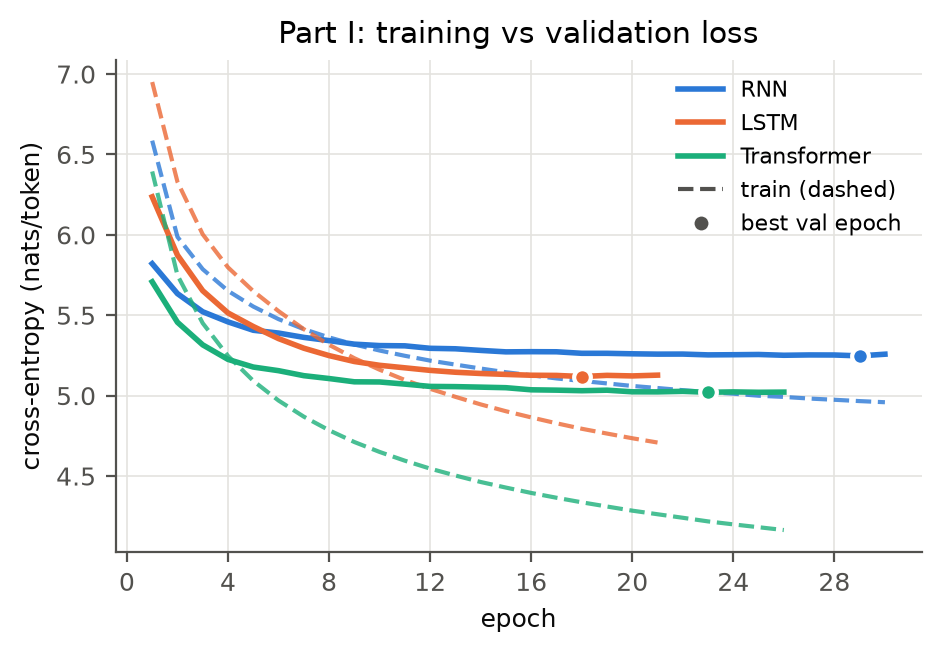
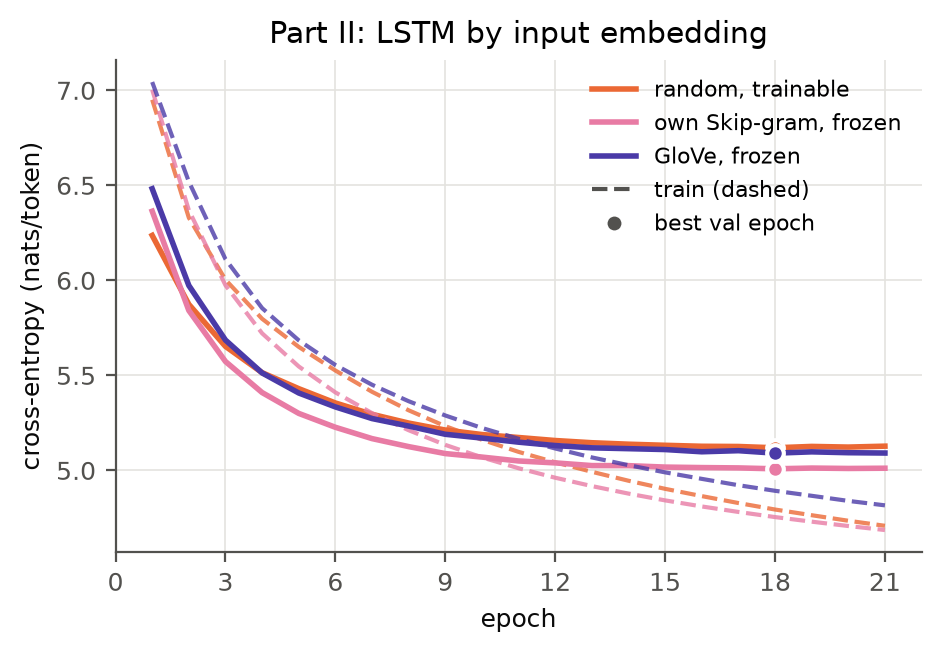
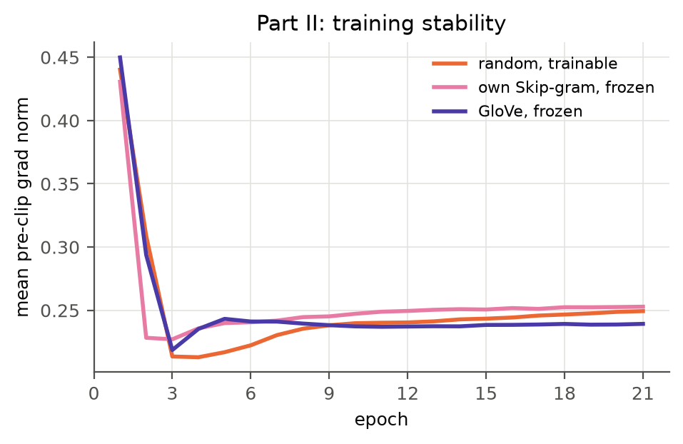
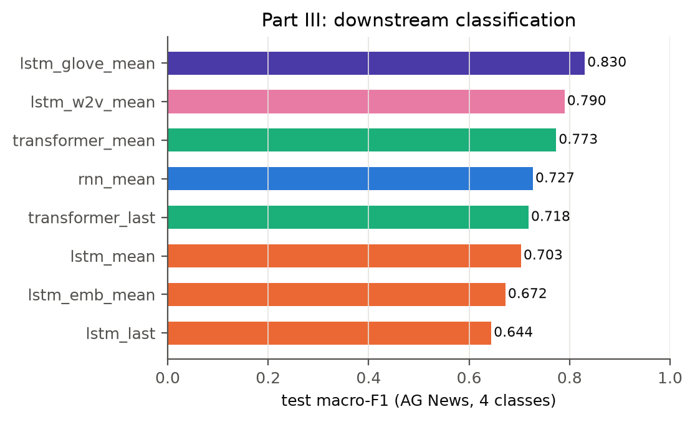
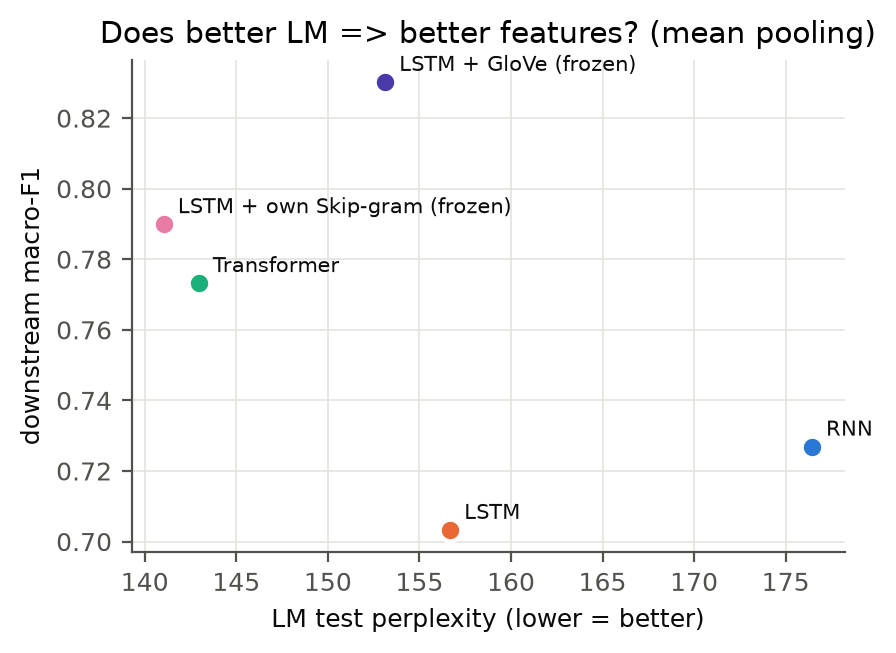

Guiding question. On a small corpus with a matched compute budget, how do model families and input-embedding choices differ in next-token prediction, and does better next-token prediction translate into better fixed-length representations for a downstream classifier?
Corpus and preprocessing. WikiText-2 (wikitext-2-v1, HuggingFace). The text is already tokenized and rare words are already mapped to <unk>. We lowercase everything (GloVe-6B is uncased, so this keeps the embedding-coverage comparison fair), split on whitespace, drop blank lines and append <eos> to every line. The vocabulary is built from the training split only: 28,913 types, including <pad>, <unk>, <eos>. The splits contain 2.08M / 216K / 244K tokens (train / valid / test), with <unk> rates of 2.6% / 5.4% / 6.2%.
Common evaluation setup. Each split is cut into windows of 65 tokens that overlap by one token, so every target in the stream is scored exactly once. The last window is right-padded, and <pad> targets are excluded from the loss. No hidden state is carried across windows. Every model, including the n-gram (whose history is clipped to the window), therefore predicts each target from at most the preceding 64 in-window tokens. We report mean next-token cross-entropy (CE, nats) and perplexity (PPL = eCE). Because no state is carried across windows, our PPLs are higher than published numbers for stateful LSTMs and should only be compared within this report.
Hardware and timing. Neural models were trained on an Apple M5 (16 GB) with the PyTorch 2.14 MPS backend; the n-gram and Word2Vec ran on the CPU. Training time is the wall-clock time of the training loop (validation excluded), with device synchronisation before and after timing. The common inference workload is forward-only over the first 50 test batches (32×64 = 102,400 positions), after 5 warm-up batches. All runs use seed 42; generation uses seed 123+i for prompt i.
Models. 3-gram: interpolated Kneser–Ney with discount D = 0.75 (implemented from scratch). The highest order uses raw counts, lower orders use continuation counts, and the unigram level is interpolated with a uniform distribution. Neural: all three models use a randomly initialized, trainable 100-d embedding (the dimension is chosen to match GloVe-100d for Part II), followed by a backbone and an untied linear softmax layer over 28,913 words:
Dropout is 0.3 for the RNN and LSTM and 0.2 for the Transformer. All three are trained identically: Adam (lr 10−3), batch size 32×64, gradient-norm clipping at 1.0, at most 30 epochs, and early stopping with patience 3 on validation CE. We keep the best-validation checkpoint and evaluate it once on the test set. We checked causality empirically: perturbing token t leaves all logits at positions < t unchanged.
| Model | Test PPL | Test CE | Val PPL | Size | Backbone params | Best / run epochs | Train time to best | s / epoch | Inference (tok/s) |
|---|---|---|---|---|---|---|---|---|---|
| 3-gram KN | 227.8 | 5.43 | 242.8 | 2.61M n-gram entries | – | – | 2.3 s (counting) | – | 861K (CPU) |
| RNN | 176.5 | 5.17 | 190.1 | 10.55M | 0.22M | 29 / 30 | 3,548 s | 122 | 89K |
| LSTM | 156.7 | 5.05 | 167.1 | 11.21M | 0.89M | 18 / 21 | 2,191 s | 121 | 77K |
| Transformer | 143.0 | 4.96 | 151.6 | 11.42M | 1.10M | 23 / 26 | 2,633 s | 115 | 91K |
Table 1. Prediction quality and cost on the common setup. "Backbone" counts parameters excluding the shared-shape 100-d input embedding (2.89M) and the softmax layer (7.43M). The n-gram's inference figure is per-target scoring in Python on the CPU, so it is not directly comparable to the GPU forward passes.

| Prompt: "in the early years of the war" / "he was born in" | |
|---|---|
| 3-gram | . in one season . for the first time . <eos> the family . in the early neolithic builders , he was " . <eos> = = <eos> = = … / captivity as the film , the first ever " , as the " <unk> in the <unk> @-@ <unk> … |
| RNN | . <eos> = = = microscopic life = = = <eos> on the other hand , <unk> can be seen in the top of the 20th century . the song was written by her parents … / march 2006 . <eos> = = = new york = = = <eos> the australian football league games , federer began the second four @-@ yard @-@ winning @-@ touchdown … |
| LSTM | , the german prerogative was not to be the son of " the <unk> " . the king was also influenced by the <unk> ( croatian @-@ <unk> ) on may 23 , 1863 … |
| Transf. | . <eos> = = = hurricane kenna = = = <eos> in the atlantic ocean , hurricane christine moved to the central pacific ocean . on january 16 , an eye of convection was detected … / … the hurricane produced gusty winds of 140 mph ( 140 km / h ) … |
| Generated text (5 prompts × 40 tok) | 3-gram | RNN | LSTM | Transf. |
|---|---|---|---|---|
| distinct-2 | 0.92 | 0.87 | 0.86 | 0.90 |
| repeated-trigram fraction | 0.02 | 0.04 | 0.06 | 0.04 |
| <unk> / heading "=" fraction | .07 / .04 | .07 / .14 | .09 / .14 | .02 / .05 |
Figure 1 and Table 2. Left: training (dashed) and validation (solid) CE; the dot marks the best-validation epoch. Right: continuations under matched decoding (top-k = 40, temperature 0.8, 40 new tokens, same seeds; only <pad> is banned), with simple repetition statistics. Full samples are in Appendix C.
Observations.
Possible explanations (not tested separately).
Trade-off. On this budget, the Transformer buys about 9% lower PPL than the LSTM and clearly better topical consistency at similar wall time. It needs early stopping because it overfits fastest. The n-gram is the only choice when training compute is nearly zero, but it degrades sharply in quality.
Design. We use the Part I LSTM and change only the input-embedding table (100-d). Architecture, data, optimiser, seed (the model is re-seeded right before construction), stopping rule and the 30-epoch cap are identical across the three settings:
OOV rows are drawn from N(0, σ), where σ is the standard deviation of the pretrained vectors (0.41 for GloVe), and the <pad> row is zero. In both frozen settings the entire table is fixed, including the random OOV rows, which leaves 8.32M trainable parameters instead of 11.21M.
| Input embedding | Test PPL | Val PPL | Val PPL ep1 / ep5 | Best / run ep. | Val−train CE at best | Grad norm mean / max | Trainable | LM time to best | Embedding cost | distinct-2 |
|---|---|---|---|---|---|---|---|---|---|---|
| Random, trainable | 156.7 | 167.1 | 511 / 228 | 18 / 21 | 0.33 | 0.25 / 1.26 | 11.21M | 2,191 s | – | 0.86 |
| Own Skip-gram, frozen | 141.1 | 149.7 | 580 / 200 | 18 / 21 | 0.25 | 0.25 / 1.30 | 8.32M | 1,876 s | 55 s (1 CPU thread) | 0.89 |
| GloVe 6B, frozen | 153.1 | 162.5 | 653 / 223 | 18 / 21 | 0.20 | 0.25 / 1.62 | 8.32M | 1,897 s | external (6B tokens) | 0.75 |


Table 3 and Figure 2. Embedding ablation on the LSTM. The cost of training our own embeddings is reported separately from LM training. Gradient norms are measured before clipping and averaged per epoch.
Observations.
Interpretation: trainability vs. extra data.
Task and protocol. AG News topic classification (4 balanced classes) with stratified subsets: 10K train and a disjoint 2K validation set from the official training split, and 2K test from the official test split.
| Representation (frozen LM, pooling) | Dim | Test acc. | Test macro-F1 [95% CI] | F1 Business / Sports | LM test PPL |
|---|---|---|---|---|---|
| LSTM, last | 256 | 0.649 | 0.644 [0.623, 0.663] | 0.48 / 0.79 | 156.7 |
| LSTM, mean | 256 | 0.705 | 0.703 [0.686, 0.723] | 0.60 / 0.83 | 156.7 |
| Transformer, last | 256 | 0.720 | 0.718 [0.700, 0.735] | 0.60 / 0.85 | 143.0 |
| Transformer, mean | 256 | 0.774 | 0.773 [0.755, 0.790] | 0.69 / 0.88 | 143.0 |
| RNN, mean | 256 | 0.730 | 0.727 [0.708, 0.746] | 0.61 / 0.85 | 176.5 |
| LSTM + own Skip-gram (frozen), mean | 256 | 0.791 | 0.790 [0.772, 0.806] | 0.69 / 0.90 | 141.1 |
| LSTM + GloVe (frozen), mean | 256 | 0.831 | 0.830 [0.812, 0.847] | 0.75 / 0.93 | 153.1 |
| LSTM input embeddings, emb-mean (no context) | 100 | 0.674 | 0.672 [0.651, 0.692] | 0.57 / 0.76 | – |


Table 4 and Figure 3. Frozen-LM features with a logistic-regression probe on AG News. Right: LM test PPL against downstream macro-F1, one point per LM (mean pooling).
Observations.
Interpretation.
[1] Merity, Xiong, Bradbury, Socher (2016). Pointer Sentinel Mixture Models. (WikiText-2) · [2] Kneser & Ney (1995). Improved backing-off for M-gram language modeling. ICASSP · [3] Chen & Goodman (1999). An empirical study of smoothing techniques for language modeling. CSL · [4] Hochreiter & Schmidhuber (1997). Long short-term memory. Neural Computation · [5] Vaswani et al. (2017). Attention is all you need. NeurIPS · [6] Xiong et al. (2020). On layer normalization in the Transformer architecture. ICML · [7] Pascanu, Mikolov, Bengio (2013). On the difficulty of training recurrent neural networks. ICML · [8] Mikolov et al. (2013). Distributed representations of words and phrases and their compositionality. NeurIPS · [9] Pennington, Socher, Manning (2014). GloVe: Global vectors for word representation. EMNLP · [10] Zhang, Zhao, LeCun (2015). Character-level convolutional networks for text classification. NeurIPS (AG News) · [11] Hoffmann et al. (2022). Training compute-optimal large language models · [12] Fan, Lewis, Dauphin (2018). Hierarchical neural story generation. ACL (top-k sampling) · Software: PyTorch, gensim (Řehůřek & Sojka 2010), scikit-learn, HuggingFace datasets, matplotlib.
| Setting | Value |
|---|---|
| Data | WikiText-2 v1 (lowercased); vocab 28,913 from train; windows 64+1, stride 64, no state carry-over |
| Shared LM settings | emb 100, untied output, Adam lr 1e-3, wd 0, batch 32, clip 1.0, ≤30 epochs, early stop patience 3 (val CE), seed 42 |
| RNN / LSTM | 2 layers, hidden 256, dropout 0.3 (embedding, between layers, output) |
| Transformer | 100→256 projection, learned positions (64), 2 pre-LN blocks, 4 heads, FFN 512, GELU, dropout 0.2, final LayerNorm |
| 3-gram | Interpolated Kneser–Ney, D = 0.75; uniform interpolation at unigram level |
| Skip-gram | gensim 4.4, sg=1, dim 100, window 5, negative 10, 10 epochs, min_count 1, 1 worker, PYTHONHASHSEED=0 |
| Generation | 5 prompts (configs/prompts.txt), top-k 40, T 0.8, 40 tokens, seed 123+i, context clipped to 64 |
| Part III | AG News 10K/2K/2K stratified (seed 42), max 64 tokens, StandardScaler + LogisticRegression (lbfgs, max_iter 5000), C by val macro-F1 |
Everything is reproduced with bash scripts/run_all.sh (about 4.5 h on the hardware above). All hyperparameters are in configs/, and every metrics JSON stores its resolved config and hardware info. See README.md for data access and commands.
An earlier run capped at 15 epochs stopped every neural model at epoch 15, so none had converged. We therefore raised the cap to 30 epochs. The ranking is unchanged, and the gains are 1–3%:
| Test PPL | RNN | LSTM | Transformer | LSTM + Skip-gram | LSTM + GloVe |
|---|---|---|---|---|---|
| 15-epoch cap | 180.0 | 158.0 | 145.7 | 142.1 | 155.3 |
| 30-epoch cap (reported) | 176.5 | 156.7 | 143.0 | 141.1 | 153.1 |
The Part III ordering was also stable. With the 15-epoch models the macro-F1 values were GloVe 0.834, Skip-gram 0.789, Transformer-mean 0.760, RNN-mean 0.693, LSTM-mean 0.689 and LSTM-last 0.608. The same Transformer throughput measured 73.9K tok/s in that run, compared with 91.3K here.
| Model | Prompt → continuation (first 25 tokens) |
|---|---|
| 3-gram | [the history of the city] of sarnia , which was then re @-@ released as an official single " no one wanted to do so , the <unk> and … |
| RNN | [the album was released] by paul mccartney . she was nominated for the uk of the music and <unk> . <eos> = = = = <unk> <unk> = = = … |
| LSTM | [the species is found in] the genus . <eos> = = = chemical bodies = = = <eos> although a protein of cadmium is a dag , the cell is … |
| Transformer | [the album was released] on august 17 , 2006 . " crazy in love " debuted at number 1 on the billboard hot 100 , 2009 . it peaked at number 21 … |
| Transformer | [the species is found in] the united states . the formation of species is a member of the migratory species of species that is particularly in the genus stereum … |
| LSTM + Skip-gram | [the album was released] on cd @-@ rom on july 7 , 2013 , and the video has been released on june 14 , 2003 , which the song was released … |
| LSTM + GloVe | [the album was released] by michael kahne . <eos> = = = synopsis = = = <eos> = = = production = = = <eos> = = = critical reception = = = … |
All samples are in results/samples/*.txt, and the full Part III error lists are in results/samples/part3_errors.md.
All datasets are public and are downloaded by the code: WikiText-2 (CC BY-SA), AG News (non-commercial research use) and GloVe (PDDL). None are redistributed in the repository. No API keys or private data are used. AI assistance: the code base (data pipeline, models, training and evaluation scripts) and a first draft of this report were produced with the help of Claude (Anthropic), an AI coding assistant, under my direction. I chose the experimental design, reviewed and ran all experiments, verified the reported numbers against the generated result files, and revised the analysis to reflect my own understanding. [Edit this statement so that it accurately describes your own contribution.]